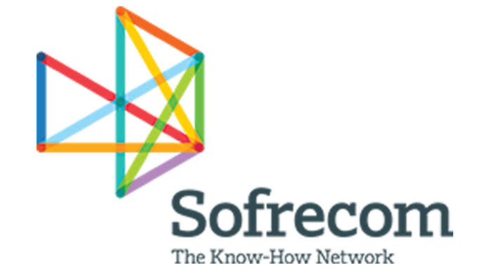

Jul – Aug 2026

Sofrecom Tunisie
AI and data engineering intern
Diamond for Sales, an internal web platform that finds sales opportunities that went quiet.
- Designed a platform that cleans, analyzes and scores business data pulled from the CRM.
- Added LLM analysis that writes a short summary and suggests the next action for each opportunity.
- Built the whole chain: data extraction, backend, and a dashboard that is easy to read.